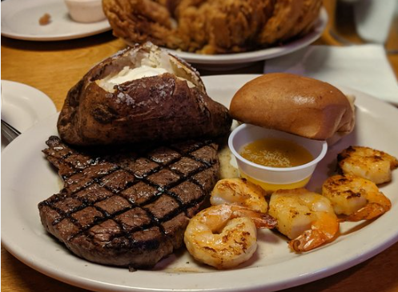
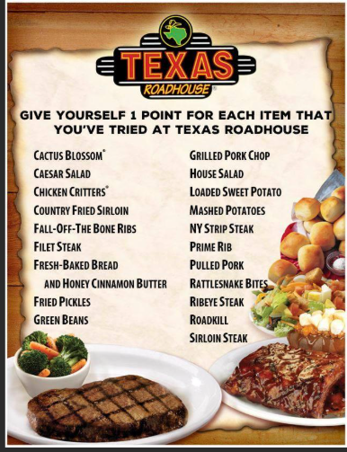

Texas Roadhouse is a brand new restruant that opened up in Bakersfield in march of last year!
We are known for our hand cut steaks and our fresh baked bread with cinnamon butter! Our restaurant is located at 3203 Ming Ave! Our opening hours are 11am-10pm monday-sunday, Our food is made fresh daily and we have a wide variety of good food!!!
Some information about our food: All of our dishes are freshly made daily using high-quality ingredients. Our steaks are hand-cut, our bread is baked fresh every day, and we offer a variety of sides prepared from scratch. We take pride in serving flavorful meals and providing a true Texas dining experience.
We have multiple specials which can be used at anytime! There are some specials that are only one day per week like Kids night which kids eat cheaper on designated nights , Rib Monday is where all ribs are cheaper and have other things! During early hours you can come in and get a discounted meal for 10.99!!
We have an awards program through the app which allows you to get discounted meals and sometimes free meals with the points on the app.
Allergy Information: Texas Roadhouse offers a variety of menu items that may contain common allergens such as peanuts, tree nuts, dairy, eggs, wheat, soy, fish, and shellfish. If you have any allergies, please inform your server before ordering. We do our best to accommodate dietary needs, but cross-contact may occur. For detailed allergen information, please refer to our official menu or ask a staff member for assistance.
Founded in 1993, Texas Roadhouse emphasizes a family-friendly environment and Southern hospitality. In addition to steaks, the restaurant offers a variety of ribs, chicken dishes, seafood, and made-from-scratch sides. Texas Roadhouse is recognized for its commitment to quality ingredients and exceptional service, making it a favorite dining destination for many .
Our menu features a variety of hand-cut steaks, fall-off-the-bone ribs, and more. Some popular items include:
We also offer a variety of vegetarian options, including salads, vegetable sides, and meatless entrees. Please ask your server for recommendations or details about our vegetarian-friendly dishes.
Our desserts include homemade cheesecake, chocolate brownie, and apple pie. For beverages, we offer soft drinks, iced tea, lemonade, coffee, and a selection of beer and wine.
We offer birthday celebrations with complimentary desserts for guests celebrating their special day. Reservations are recommended for large parties and special occasions; please call ahead or use our online reservation system to secure your table.
if you have any other questions about our restaurant then go to the webpage link below or contact us at (661) 397-0422
texas roadhouse